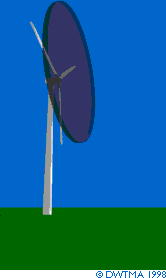

The
Energy in the Wind:
Air Density and Rotor Area

 A wind turbine obtains its power
input by converting the force of the wind into a torque
(turning force) acting on the rotor blades. The amount of energy
which the wind transfers to the rotor depends on the density
of the air, the rotor area, and the wind speed.
A wind turbine obtains its power
input by converting the force of the wind into a torque
(turning force) acting on the rotor blades. The amount of energy
which the wind transfers to the rotor depends on the density
of the air, the rotor area, and the wind speed.
The cartoon shows how a cylindrical slice of air 1 metre thick
moves through the 1,500 m2 rotor of a typical 600
kilowatt wind turbine.
 With a 43 metre rotor diameter each cylinder
actually weighs 1.9 tonnes, i.e. 1,500 times 1.25 kilogrammes.
With a 43 metre rotor diameter each cylinder
actually weighs 1.9 tonnes, i.e. 1,500 times 1.25 kilogrammes.
Density
of Air
The kinetic energy of a moving body is proportional
to its mass (or weight). The kinetic energy in the wind thus
depends on the density
of the air, i.e. its mass per unit of volume.
 In other words, the "heavier" the
air, the more energy is received by the turbine.
In other words, the "heavier" the
air, the more energy is received by the turbine.
 At normal atmospheric pressure and at 15°
Celsius air weighs some 1.225 kilogrammes per cubic metre, but
the density decreases slightly with increasing humidity.
At normal atmospheric pressure and at 15°
Celsius air weighs some 1.225 kilogrammes per cubic metre, but
the density decreases slightly with increasing humidity.
 Also, the air is denser when it is cold than
when it is warm. At high altitudes, (in mountains) the air pressure
is lower, and the air is less dense.
Also, the air is denser when it is cold than
when it is warm. At high altitudes, (in mountains) the air pressure
is lower, and the air is less dense.
Rotor
Area
A typical 600 kW wind turbine has a rotor diameter
of 43-44 metres, i.e. a rotor area of some 1,500 square metres.
The rotor area determines how much energy a wind turbine is able
to harvest from the wind.
 Since the rotor area increases with the square
of the rotor diameter, a turbine which is twice as large will
receive 22 = 2 x 2 = four times as much energy.
The page on the size
of wind turbines gives you more details.
Since the rotor area increases with the square
of the rotor diameter, a turbine which is twice as large will
receive 22 = 2 x 2 = four times as much energy.
The page on the size
of wind turbines gives you more details.
© Copyright 1999 Soren Krohn. All rights reserved.
Updated 6 August 2000
http://www.windpower.org/tour/wres/enerwind.htm